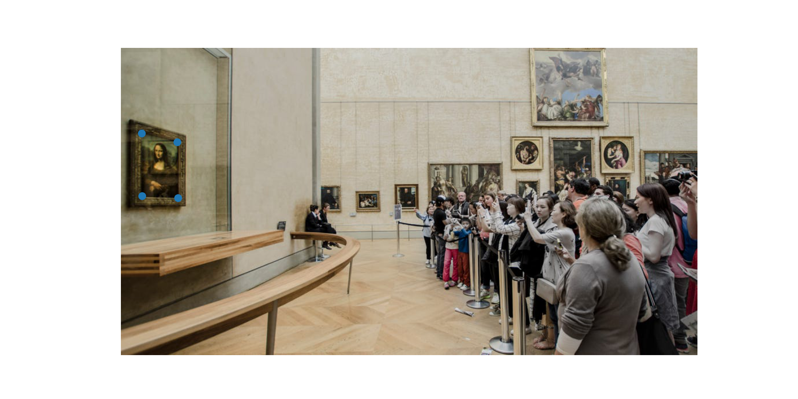

Here, we are working with homographies: transforming images in a way that it appears to shift our perspective of an image. This can be done with a linear transformation. It obviously doesn't give new information as if the photo was taken from a different location, just making the photo look as if it was from a different angle.
Recover Homographies
In order to define the homography transformation between one set of points and another, I used the method described in this article https://towardsdatascience.com/estimating-a-homography-matrix-522c70ec4b2c. If you take the the original formula for a homography
and actually multiply everything out, substituting the last equation z_a = h_31 + h_32 + h_33 for the z_a in the other two equations, you will end up getting 2 equations that are linearly independent. If you do this for each of your 4 points defined for the homography, you will have 8 equations for your 8 variables (setting h_33 to 1). The following is the system of equations you get in matrix form.

You can simply use least squares and roll up the values of h into a matrix (again, h_33 = 1). This transform isn't all you need though. Notice in the first equation that everything is scaled by z_a. In order to recover the x_i_hat and y_i_hat values themselves (which are the actual values that you care about), you need to divide every output vector you use this transform on by the z_a value given in the last entry of the output vector.
Here are some samples. These first two images are original images.


Here is the second image warped to the perspective of the first.

You can see that it looks pretty convincing. The way in which we did this also should lead to a half decent alignment of the images as well.
Image Rectification
Here is the results of going from a slanted view to a front view of the Mona Lisa.
Here is the input image. The second image has the keypoints.

Here is the output of transforming from the perspective of the side view to the front view of the mona lisa.

You can see that this looks pretty good. The view is nice, but unfortunately, due to the nature of the homography, the reflections in the glass don't get removed as if we were looking at it from head on. The same goes for the inner side of the frame. The right inside of the frame was visible from the side view, and we can still see it in the new view, but only the right side since the left side wasn't visible from our other view, hence the disorienting brown bar on the right side from the inner right side of the frame in our output view.
Mosaic Creation
Here, I just used the fact that my homography transform will also shift the image to be aligned with the keypoints in the starting frame to keep a running transform as I went down the list of images, starting with the identity and composing the next transform with this running transform and then transforming the next image with the current running transform. The output can be seen here. I also just averaged instead of feathering in the blended areas.

There are some issues with this. Clearly the transform isn't doing a perfect job. The homography itself looks fine, there are just some image alignment issues that cause the middle areas to be a bit blurred. Below is the list of keypoints we defined.
You can see that my keypoints aren't exactly aligned. I blame the matplotlib ginput which selects points that are offset down and to the right a few pixels from the tip of my mouse cursor... more towards the middle of the tip of my cursor. I also could have defined more points between the two images. That being said, half of the issue is that when taking the photos, I didn't leave enough room in between photos that would have allowed me to find more good keypoints and get a better transform.
Another issue that causes some weirdness is that I took this image at an off angle to the horizon. Instead of looking at images that are almost on the side of a cylinder, this mosaic is more like the top hemisphere in a dome. This is why the tower looks like it is at a weird angle: because it is so far from the first image (which we defined to be the center of the mosaic).
All that being said, without feathering or anything it does a good job. The homography itself is clearly still working and with better feature alignment and some real feathering and feature blur, this will only get better.
Bells and Whistles
Here is a fun image I did. I replaced the Mona Lisa with Nyan cat. Same keypoints as the mona lisa above. Enjoy